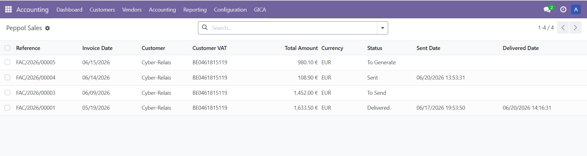
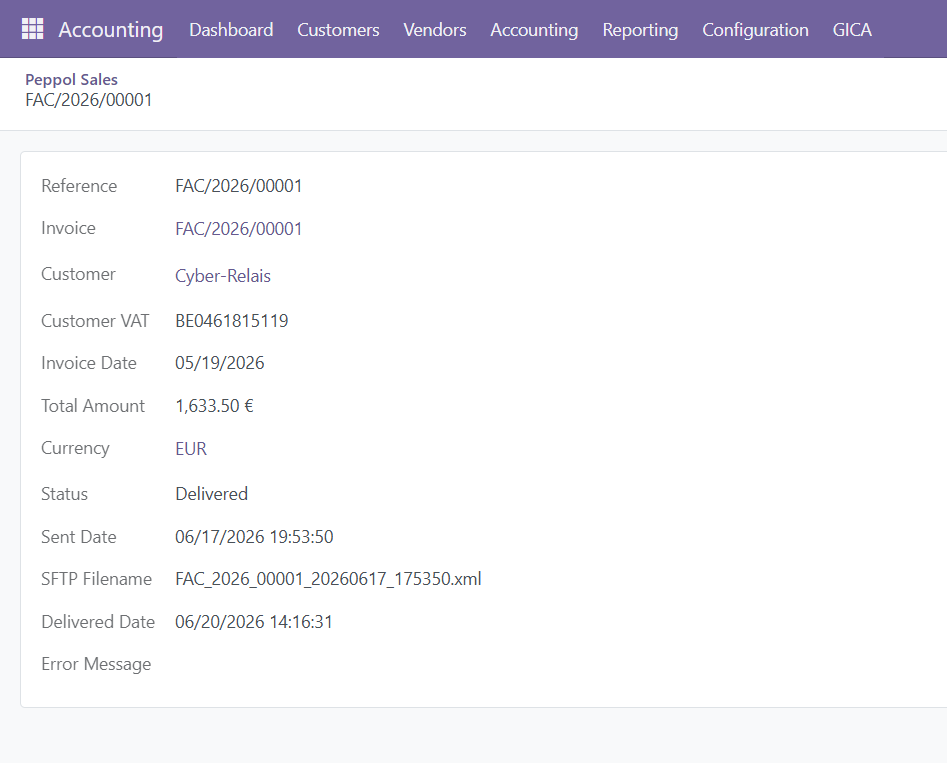
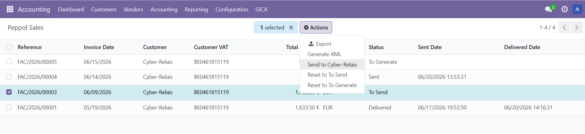
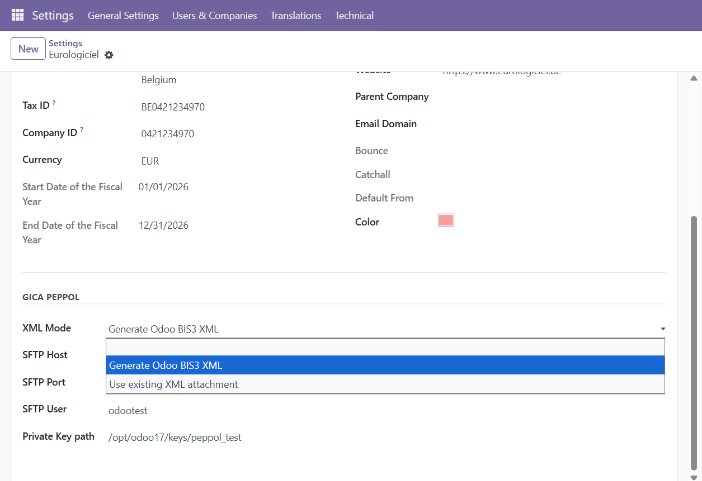
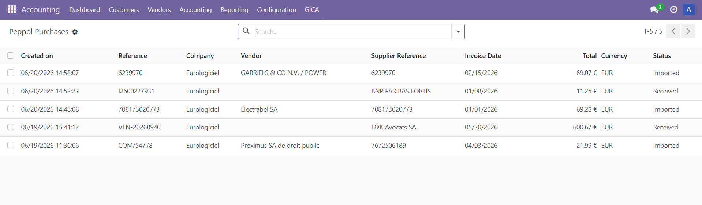
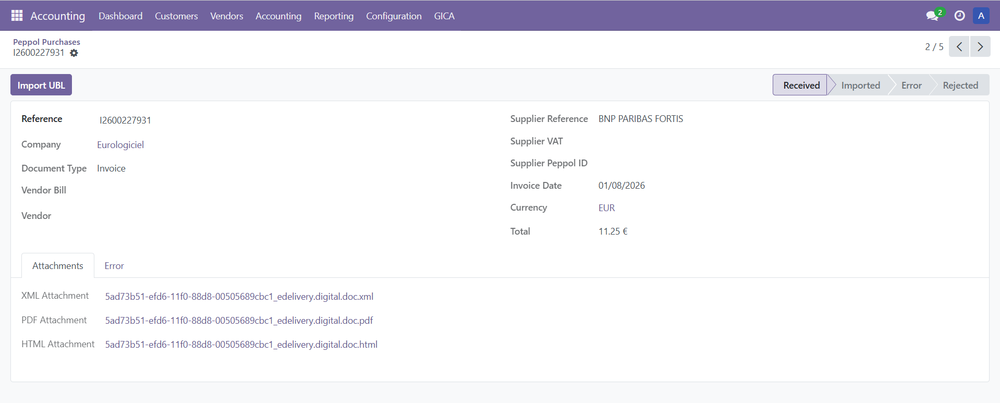
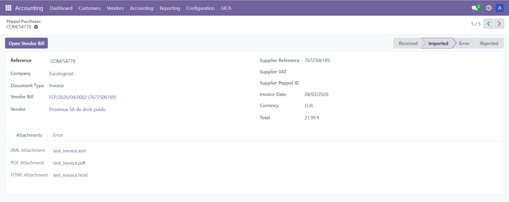
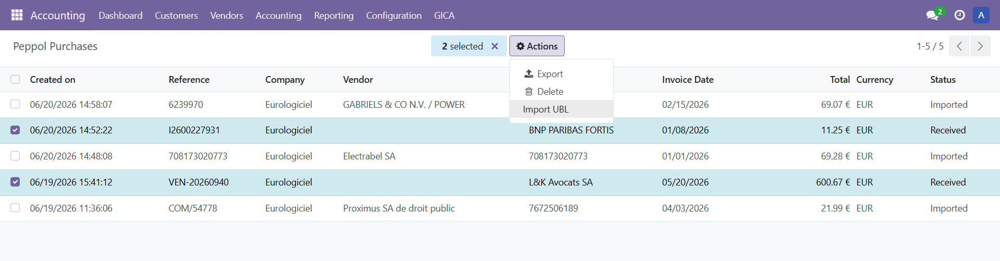

Peppol document exchange for Odoo.
Send and receive electronic invoices through the Peppol network while keeping the complete process integrated with standard Odoo Accounting.
Designed for organisations that want to automate inbound and outbound invoice exchange while retaining full control over documents, processing status and accounting validation.
GICA Peppol creates outbound Peppol documents from posted customer invoices and prepares everything required for electronic delivery.
Review outbound Peppol sales documents together with customer, amount, processing status and transmission information.

Access the originating invoice, generated XML and PDF attachments, customer information and document delivery status from one view.

Send several outbound Peppol documents in one operation while keeping each document individually traceable.

Configure Peppol document generation and connectivity settings separately for each Odoo company.

Receive supplier invoices from an external Peppol service and prepare them for controlled import into Odoo.
Review received Peppol purchase documents before importing them into Odoo Accounting.

Inspect the received document and its attachments before creating the vendor bill.

Once imported, the Peppol record remains linked to the generated vendor bill for complete traceability.

Import several selected UBL documents into draft vendor bills in one operation.

GICA Peppol keeps outbound and inbound documents connected to their originating Odoo accounting records.
Outbound workflow
Odoo customer invoice → UBL and PDF generation → connectivity service → Peppol network
Inbound workflow
Peppol network → connectivity service → GICA Peppol API → draft vendor bill
This approach preserves accounting control inside Odoo while delegating Peppol network connectivity to an external service.
The inbound API expects a pure UBL Invoice or Credit Note document.
If a Standard Business Document (SBD) is received, the external Peppol platform must extract the UBL document from the SBD envelope before sending it to Odoo.
GICA Peppol exchanges documents through an external Peppol connectivity service or Access Point.
Eurologiciel can provide integration and connectivity services for:
More information: www.eurologiciel.be/odoo/
GICA Peppol is available in:
Install the complete Accounting application.
The complete Accounting interface should be available.
If necessary, the OCA module account_usability (or an equivalent solution) can be installed to expose the complete Accounting menus.
Eurologiciel develops business solutions for Odoo, including GICA modules, Peppol integration and accounting automation.